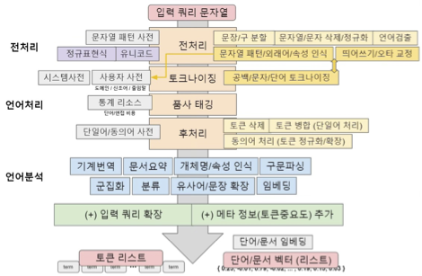
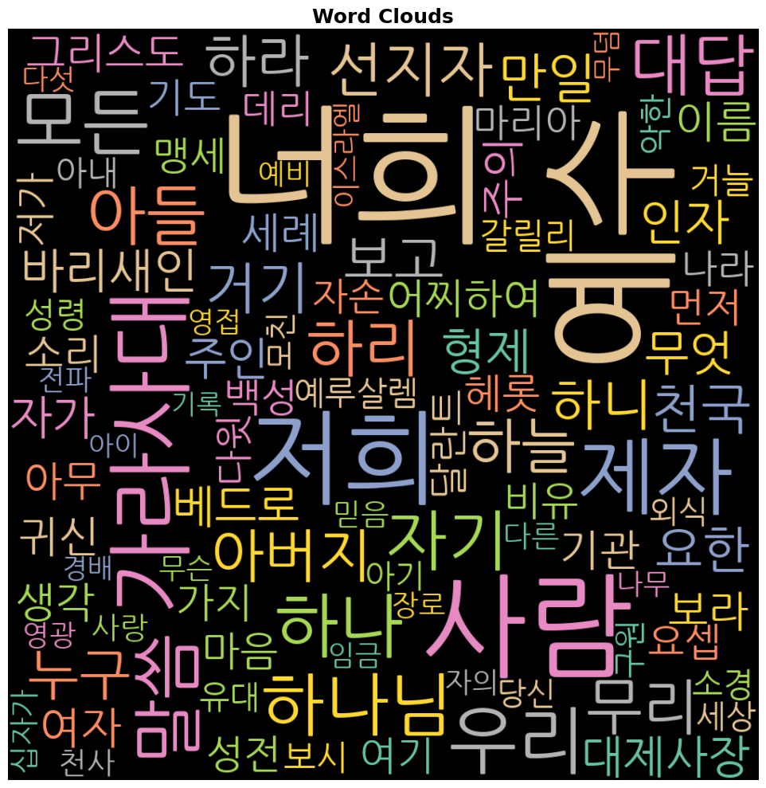

감성분석 | 형태소 분석
자연어 처리(NLP) 개요
자연어 처리(Natural Language Processing, NLP)는 인간의 언어를 컴퓨터가 이해하고 처리할 수 있도록 하는 인공지능의 핵심 분야이다. 텍스트 데이터에서 의미 있는 정보를 추출하고, 언어 구조를 분석하며, 기계가 인간의 언어를 생성·번역·요약할 수 있게 한다.
원시 텍스트 → 전처리(Preprocessing) → 형태소 분석 →
특징 추출(Feature Extraction) → 분석/모델링 → 결과 해석| 단계 | 주요 작업 | 도구 |
|---|---|---|
| 데이터 수집 | PDF, 웹 크롤링, API | PyPDF2, pdfplumber, requests |
| 전처리 | 노이즈 제거, 정규화 | re, pandas |
| 형태소 분석 | 토크나이징, 품사 태깅 | KoNLPy, MeCab |
| 특징 추출 | 빈도, TF-IDF, 임베딩 | sklearn, gensim |
| 시각화 | 워드클라우드, 네트워크 | wordcloud, networkx |
1. 데이터 읽어오기 pdf ➝ 문자열
텍스트 마이닝의 출발점은 원시(raw) 데이터를 파이썬이 처리할 수 있는 문자열(string) 형태로 변환하는 것이다. PDF는 가장 흔한 문서 형식 중 하나로, Python에서는 PyPDF2와 pdfplumber 두 가지 주요 라이브러리를 통해 텍스트를 추출할 수 있다.
1. pdf ➝ 문자열
| 항목 | PyPDF2 | pdfplumber |
|---|---|---|
| 속도 | 빠름 | 보통 |
| 정확도 | 보통 | 높음 |
| 표·레이아웃 처리 | 미지원 | 지원 |
| 한글 처리 | 불안정 | 안정적 |
| 권장 용도 | 간단한 영문 PDF | 복잡한 레이아웃, 한글 PDF |
로컬/Drive 데이터
# pdf 데이터 문자열 읽기
!pip install PyPDF2
# importing required modules
import PyPDF2
url = '/content/drive/MyDrive/eBook python codes/mathew.pdf'
pdfFileObj = open(url, 'rb') # 'rb': read binary — PDF는 이진 파일
pdfReader = PyPDF2.PdfReader(pdfFileObj) # PdfFileReader → PdfReader (v3.x 변경)
print(len(pdfReader.pages)) # numPages → len(pages) (v3.x 변경)
pageObj = pdfReader.pages[0] # getPage(0) → pages[0] (v3.x 변경)
pdf_str = pageObj.extract_text() # extractText() → extract_text() (v3.x 변경)
print(pdf_str)(마1:8)아사는 여호사밧을 낳고 여호사밧은 요람을 낳고 요람은 웃시야를 낳고
(마1:9)웃시야는 요담을 낳고 요담은 아하스를 낳고 아하스는 히스기야를 낳고
(마1:10)히스기야는 므낫세를 낳고 므낫세는 아몬을 낳고 아몬은 요시야를 낳고(마1:11)바벨론으로 이거할 때에 요시야는 여고냐와 그의 형제를 낳으니라open(url, 'rb'): 파일을 이진 읽기(read binary) 모드로 열기. PDF는 텍스트가 아닌 이진 파일이므로'rb'필수.PdfReader: PDF 문서 전체를 파싱하는 객체..pages로 페이지 리스트에 접근.extract_text(): 페이지 내 텍스트를 문자열로 반환. 레이아웃 정보는 손실됨.- PyPDF2 버전 주의: v3.x 이후 API가 대폭 변경되어 구버전 코드(
PdfFileReader,numPages,extractText)는 동작하지 않음.
웹 URL 데이터
# 설치 (최초 1회만 실행)
!pip install pdfplumber requests
import pdfplumber
import requests
from io import BytesIO
# PDF 파일 URL
pdf_url = 'https://by-sekwon.github.io/api/mathew.pdf'
# URL에서 PDF 다운로드 → 메모리(BytesIO)로 읽기
response = requests.get(pdf_url)
response.raise_for_status() # 다운로드 실패(4xx, 5xx) 시 예외 발생
pdf_file = BytesIO(response.content) # 바이트 스트림을 파일 객체처럼 취급
# 전체 텍스트 저장 변수
pdf_str = ""
# PDF 읽기
with pdfplumber.open(pdf_file) as pdf:
# 페이지별 텍스트 추출
for page in pdf.pages:
page_text = page.extract_text()
# None 방지: 빈 페이지(이미지만 있는 페이지)는 None 반환
if page_text:
pdf_str += page_text + "\n"
# 확인
print(type(pdf_str)) # <class 'str'>
print(pdf_str[:1000]) # 앞 1000자 출력(마1:8)아사는 여호사밧을 낳고 여호사밧은 요람을 낳고 요람은 웃시야를 낳고
(마1:9)웃시야는 요담을 낳고 요담은 아하스를 낳고 아하스는 히스기야를 낳고
(마1:10)히스기야는 므낫세를 낳고 므낫세는 아몬을 낳고 아몬은 요시야를 낳고requests.get(url): HTTP GET 요청으로 파일을 바이트(bytes) 형태로 다운로드.raise_for_status(): 4xx(클라이언트 오류), 5xx(서버 오류) 응답 시 즉시 예외를 발생시켜 오류를 빠르게 감지.BytesIO(response.content): 메모리상의 바이트 데이터를 파일처럼 다루는 버퍼 객체. 디스크에 저장하지 않고 바로 PDF 파서에 전달 가능.pdfplumber.open():with문으로 열어 사용 후 자동으로 파일을 닫아 메모리 누수 방지.page.extract_text(): 페이지 레이아웃을 고려하여 텍스트 추출. 빈 페이지는None반환.if page_text:None이나 빈 문자열일 때를 방어하는 조건 처리.
추출된 텍스트에는 (마1:8), (마1:9) 같은 장절 표기가 포함되어 있다. 이는 자연어 분석에 불필요한 노이즈이므로 다음 단계인 전처리에서 제거해야 한다. pdf_str은 모든 페이지의 텍스트가 하나의 긴 문자열로 연결된 상태이다.
2. 문자열(String) 불필요 문자 정리
텍스트 데이터를 형태소 분석하기 전에 숫자, 특수문자, 분석에 불필요한 패턴 등을 사전에 제거하는 전처리(Preprocessing) 단계가 필요하다. Python에서는 정규표현식(Regular Expression) 을 활용하여 효율적으로 불필요한 문자를 제거할 수 있다.
| 패턴 | 의미 | 예시 |
|---|---|---|
[가-힣] |
완성형 한글 범위 | ‘아’ ~ ‘힣’ |
[ㄱ-ㅎ] |
한글 자음 범위 | ㄱ, ㄴ, ㄷ … |
[ㅏ-ㅣ] |
한글 모음 범위 | ㅏ, ㅑ, ㅓ … |
[^...] |
대괄호 안 문자 이외 | [^가-힣] = 한글 제외 모두 |
\d |
숫자(0-9) | \d+ = 연속 숫자 |
\s |
공백 문자 | 스페이스, 탭, 줄바꿈 |
+ |
1회 이상 반복 | a+ = ‘a’, ‘aa’, ‘aaa’ |
* |
0회 이상 반복 | a* = ’‘, ’a’, ‘aa’ |
? |
0 또는 1회 | a? = ’‘, ’a’ |
\(? |
괄호 ( 이 있을 수도 없을 수도 |
선택적 매칭 |
문자열 형태로 저장된 텍스트에서 한글 이외의 문자(숫자, 특수문자, 영문자 등)를 제거한다. Python의 re.sub() 함수로 처리한다.
import re
# 줄바꿈을 먼저 공백으로 변환
ds_str2 = pdf_str.replace('\n', ' ')
# 장절 표기 패턴 제거: (마 1), 마1, 마 1 등 "마+숫자" 형태 모두 제거
ds_str2 = re.sub(r'\(?\s*마\s*\d+\s*\)?', ' ', ds_str2)
# 한글, 공백을 제외한 모든 문자 제거
ds_str2 = re.sub('[^ㄱ-ㅎㅏ-ㅣ가-힣 ]', '', ds_str2)
# 연속된 공백을 하나로 정리
ds_str2 = re.sub(' +', ' ', ds_str2).strip()
# 결과 확인
print(ds_str2[0:100])아사는 여호사밧을 낳고 여호사밧은 요람을 낳고 요람은 웃시야를 낳고 웃시야는 요담을 낳고 요담은 아하스를 낳고 아하스는 히스기야를 낳고 히스기야는 므낫세를 낳고 므낫세는 아몬을 낳각 단계별 역할:
replace('\n', ' '): 줄바꿈 문자를 공백으로 치환. 줄바꿈이 남아있으면 이후 분석에서 단어가 분리될 수 있음.re.sub(r'\(?\s*마\s*\d+\s*\)?', ' ', ds_str2):\(?: 여는 괄호(가 있을 수도, 없을 수도 있음 (?= 선택)\s*: 공백이 0개 이상 (공백 유연하게 처리)마: 고정 문자 ‘마’\d+: 숫자 1개 이상 (장 번호)\)?: 닫는 괄호가 있을 수도, 없을 수도 있음
re.sub('[^ㄱ-ㅎㅏ-ㅣ가-힣 ]', '', ds_str2):^(대괄호 내부): 부정(NOT) 의 의미ㄱ-ㅎ: 한글 자음 전체ㅏ-ㅣ: 한글 모음 전체가-힣: 완성형 한글 전체- 마지막
: 공백 유지 - 결론: 한글과 공백 이외의 모든 문자 를 제거
re.sub(' +', ' ', ...).strip(): 여러 개의 연속 공백을 하나로 압축하고 양쪽 공백 제거.
(마1:8), (마1:9) 같은 장절 표기와 :, 숫자가 모두 제거되고 순수 한글 텍스트만 남았다. 단, 이 방식은 모든 내용이 하나의 긴 문자열로 이어지므로 문장 단위 분석이 불가능하다는 한계가 있다.
| 방식 | 장점 | 단점 | 적합한 분석 |
|---|---|---|---|
| 문자열(str) | 처리 간단, 전체 빈도 파악 용이 | 문장 단위 분석 불가 | 전체 빈도 분석, 워드클라우드 |
| 데이터프레임 | 문장 단위 분석 가능, 필터링 용이 | 처리 복잡 | 감성분석, TF-IDF, 문서 분류 |
형태소 분석 시 데이터프레임 방식을 권장한다.
데이터프레임에서 불필요 문자 정리
# 데이터프레임으로 읽어오기
import pandas as pd
# 줄바꿈으로 각 절(verse)을 분리 → 빈 문자열 제거 → 양쪽 공백 제거
verse_list = [v.strip() for v in pdf_str.split('\n') if v.strip()]
ds_df = pd.DataFrame(verse_list, columns=['verse'], dtype='str')
type(ds_df), ds_df.head(3)(pandas.core.frame.DataFrame,
verse
0 (마1:8)아사는 여호사밧을 낳고 여호사밧은 요람을 낳고 요람은 웃시야를 낳고
1 (마1:9)웃시야는 요담을 낳고 요담은 아하스를 낳고 아하스는 히스기야를 낳고
2 (마1:10)히스기야는 므낫세를 낳고 므낫세는 아몬을 낳고 아몬은 요시야를 낳고(마...)pdf_str.split('\n'): 줄바꿈 기준으로 분리 → 각 절(verse)이 하나의 원소가 됨.v.strip(): 양쪽 공백 제거.if v.strip()으로 빈 줄 자동 제거.pd.DataFrame(..., columns=['verse']): 리스트를 단일 열 DataFrame으로 변환.- 결과: 각 행(row)이 성경의 한 절(verse)에 해당하는 구조.
import pandas as pd
# 데이터프레임 열에서 불필요한 문자 일괄 제거
# 1단계: 마태복음 장절 표기 패턴 제거 ('\(마' 이스케이프 처리)
txt = ds_df['verse'].str.replace(r'\(마', '', regex=True)
# 2단계: 한글, 공백 이외의 문자 제거
txt = txt.str.replace('[^ㄱ-ㅎㅏ-ㅣ가-힣 ]', '', regex=True)
# 결과 확인
print(type(txt))
print(txt.head(3))<class 'pandas.core.series.Series'>
0 아사는 여호사밧을 낳고 여호사밧은 요람을 낳고 요람은 웃시야를 낳고
1 웃시야는 요담을 낳고 요담은 아하스를 낳고 아하스는 히스기야를 낳고
2 히스기야는 므낫세를 낳고 므낫세는 아몬을 낳고 아몬은 요시야를 낳고바벨론으로 이거할...
Name: verse, dtype: objectSeries.str.replace(): pandas의 벡터화 문자열 연산.for루프 없이 모든 행에 일괄 적용.regex=True: 정규표현식 패턴으로 처리 (기본값은 리터럴 문자열 치환).- 반환 타입: 결과는 DataFrame이 아닌 pandas Series (
<class 'pandas.core.series.Series'>). .str접근자:Series객체에서 문자열 메서드를 사용하기 위한 진입점.
각 행이 하나의 절로 유지되면서 불필요한 문자만 제거되었다. 이 구조를 유지하면 이후 절(verse) 단위로 감성 점수를 계산하거나 TF-IDF를 적용하는 등 문장 레벨 분석이 가능해진다.
2. 한국어 형태소 분석 (Morphological Analysis)
1. 형태소(Morpheme)의 정의
형태소(morpheme)는 언어학에서 일정한 의미가 있는 가장 작은 말의 단위로, 더 분석하면 뜻이 없어지는 말의 단위이다. 음소와 마찬가지로 형태소는 추상적인 실체이며, 문장에서 다양한 형태로 실현될 수 있다.
- 의미가 있는 최소의 단위 (minimally meaningful unit)
- 문법적·관계적인 뜻을 나타내는 단어 또는 단어의 부분
예를 들어 “먹었다”는 먹-(어간) + -었-(과거 시제 선어말어미) + -다(종결 어미) 세 개의 형태소로 분석된다.
실질형태소와 형식형태소
| 구분 | 별칭 | 정의 | 품사 | 예시 |
|---|---|---|---|---|
| 실질형태소 | 어휘형태소 | 어휘적 의미를 갖는 형태소 | 명사, 동사, 형용사, 부사 | “좋-”, “정보”, “많-” |
| 형식형태소 | 문법형태소 | 문법적 관계를 나타내는 형태소 | 조사, 어미 | “-에”, “-는”, “-가”, “-다” |
문장: “위키백과에는 좋은 정보가 많다.”
| 어절 | 형태소 분리 | 종류 |
|---|---|---|
| 위키백과에는 | 위키 + 백과 + 에는 | 어휘 + 어휘 + 문법(조사) |
| 좋은 | 좋- + -은 | 어휘(형용사 어간) + 문법(관형사형 어미) |
| 정보가 | 정보 + -가 | 어휘(명사) + 문법(주격 조사) |
| 많다 | 많- + -다 | 어휘(형용사 어간) + 문법(종결 어미) |
형태소 분석의 과정
- 단어(또는 어절)를 구성하는 각 형태소를 분리한다.
- 분리된 형태소의 기본형(lemma) 및 품사(POS) 정보를 추출한다.
- 분석 후보 생성: (1) 문법 규칙에 맞는 후보 생성, (2) 형태소 분리와 기본형 추정
- 분석 후보 선택: (1) 형태소끼리의 결합 제약 조건 만족, (2) 사전에서 기본형 확인

2. 형태소 분석의 관점
| 관점 | 목표 | 방법 | 특징 |
|---|---|---|---|
| 언어학/국어학 | 형태론적 언어 현상의 발견·규명 | 인간의 언어 능력 기반 | 정성적(qualitative) |
| 전산 언어학 | 컴퓨터 프로그램으로 형태소 분석 | 알고리즘·통계 기반 | 정량적(quantitative) |
전산 언어학 관점의 평가 기준
- 처리 범위 (분석률): 다양한 형태론적 현상들을 컴퓨터로 처리할 수 있는가
- 정확성: 얼마나 정확한 분석을 수행하는가
- 처리 속도: 시스템이 얼마나 효율적으로 동작하는가
- 기억 공간: 메모리를 효율적으로 사용하는가
한국어는 교착어(agglutinative language) 로, 어간에 다양한 어미·조사가 결합하여 의미를 변화시킨다. 같은 어근이라도 결합하는 형태소에 따라 음운 변화(연음, 축약, 탈락)가 발생하기 때문에 영어보다 형태소 분석이 훨씬 복잡하다.
- 예: “먹다” → 먹어, 먹으니, 먹고, 먹어서, 먹겠다, 먹히다…
3. KoNLPy를 이용한 한국어 형태소 분석
KoNLPy(Korean Natural Language Processing in Python)는 한국어 형태소 분석을 위한 대표적인 Python 라이브러리이다. 내부적으로 여러 형태소 분석기를 지원하며, 그 중 Okt(Open Korean Text) 는 트위터에서 개발한 오픈소스 한국어 처리 라이브러리로 소셜 미디어 텍스트 분석에 특히 효과적이다.
| 분석기 | 기반 | 특징 | 속도 | 정확도 |
|---|---|---|---|---|
| Okt (구 Twitter) | Java | SNS 텍스트 특화, 신조어 처리 강점 | 빠름 | 중상 |
| Kkma | Java | 세밀한 품사 체계(57개), 오분석 적음 | 느림 | 높음 |
| Hannanum | Java | KAIST 개발, 표준 국어 분석 | 보통 | 높음 |
| Komoran | Java | 미등록어 처리 강점, 사용자 사전 지원 | 빠름 | 높음 |
| MeCab | C++ | 가장 빠름, 형태소 분석 정확도 높음 | 매우 빠름 | 매우 높음 |
일반적인 한국어 텍스트 분석에는 Okt 또는 Komoran 을 권장.
KoNLPy 설치 및 품사 태그 체계
# KoNLPy 설치
!pip install konlpy
# Okt 품사 태그 체계 확인
from konlpy.tag import Okt
okt = Okt()
print(okt.tagset){'Adjective': '형용사', 'Adverb': '부사', 'Determiner': '관형사',
'Exclamation': '감탄사', 'Josa': '조사', 'Noun': '명사',
'Verb': '동사', 'Alpha': '영문자', 'Punctuation': '구두점',
'Foreign': '외국어', 'Number': '숫자', 'Unknown': '알 수 없는 단어'}| 태그 | 한국어 | 텍스트 분석 활용 |
|---|---|---|
| Noun | 명사 | 핵심 키워드 추출 — 가장 많이 사용 |
| Verb | 동사 | 행동/사건 분석 |
| Adjective | 형용사 | 감성분석에 핵심 (좋다, 나쁘다, 아름답다) |
| Adverb | 부사 | 강도 분석 (매우, 정말, 별로) |
| Josa | 조사 | 일반적으로 불용어 처리 |
| Unknown | 미등록어 | 신조어, 고유명사 — 별도 처리 필요 |
데이터프레임에서 명사만 추출하기
from konlpy.tag import Okt
text = [] # 분석 결과를 저장할 리스트
okt = Okt() # Okt 형태소 분석기 초기화
# 각 문장(행)에서 명사만 추출
for k in range(0, txt.shape[0]):
nouns = okt.nouns(str(txt[k])) # 명사만 추출
text.append(nouns)
# 참고: 주요 분석 메서드
# okt.phrases(text) : 어구(구문) 단위 추출
# okt.nouns(text) : 명사만 추출
# okt.pos(text) : 모든 형태소 + 품사 태깅
print(type(text))
print(text[0:5]) # 첫 5개 문장 결과 출력<class 'list'>
[['아사', '여호사밧', '여호사밧', '요람', '요람', '웃시야'],
['웃시야', '요담', '요담', '아하스', '아하스', '히스기야'],
['히스기야', '므낫세', '므낫세', '아몬', '아몬', '요시야', '바벨론', '거', '때', '요시야', '여고', '그', '형제'],
['바벨론', '거', '후', '스알디엘', '스알디엘', '스룹바벨'],
['스룹바벨', '아비훗', '아비훗', '엘리', '김', '엘리', '김', '아소르', '르', '사독', '사독', '아킴를', '아킴', '엘리', '웃']]okt.nouns(str(txt[k])): k번째 절(행)을 문자열로 변환 후 명사만 추출. 결과는 명사 리스트.text.append(nouns): 각 절의 명사 리스트를 상위 리스트에 추가 → 중첩 리스트(list of lists) 구조 생성.txt.shape[0]: Series의 행 수(전체 절 개수)로 반복 범위 설정.
각 절에서 명사만 추출된 중첩 리스트를 얻었다. 고유명사(인명)가 대부분을 차지하며, ‘거’, ‘때’, ‘그’ 같은 1글자 단어와 의미가 약한 의존 명사가 포함되어 있다. 이후 불용어 처리와 길이 필터링으로 제거할 필요가 있다.
품사 태깅 (POS Tagging)
품사 태깅(Part-of-Speech Tagging) 은 텍스트의 각 형태소에 해당하는 품사를 자동으로 부착하는 작업이다. 단순 명사 추출보다 풍부한 언어 정보를 담고 있어 더 정교한 분석이 가능하다.
okt.pos()를 사용하면 각 형태소에 품사 태그가 부여된 튜플 리스트 를 반환한다. - norm=True 옵션: 맞춤법 정규화 (예: “않됬다” → “않됐다”) - stem=True 옵션: 어간 추출 (예: “낳고”, “낳아서” → “낳다”)
# 품사 태깅 — 데이터프레임 방식
from konlpy.tag import Okt
text2 = []
okt = Okt()
# 각 문장에서 품사 태깅 수행
for k in range(0, txt.shape[0]):
tagged = okt.pos(str(txt[k])) # 모든 형태소 + 품사 태깅
text2.append(tagged)
print(text2[1]) # 두 번째 문장 태깅 결과[('웃시야', 'Noun'), ('는', 'Josa'), ('요담', 'Noun'), ('을', 'Josa'),
('낳고', 'Verb'), ('요담', 'Noun'), ('은', 'Josa'), ('아하스', 'Noun'),
('를', 'Josa'), ('낳고', 'Verb'), ('아하스', 'Noun'), ('는', 'Josa'),
('히스기야', 'Noun'), ('를', 'Josa'), ('낳고', 'Verb')]각 어절이 형태소 단위로 분리되어 (형태소, 품사) 튜플 형태로 반환된다.
- 명사(
Noun): 웃시야, 요담, 아하스, 히스기야 — 인명(고유명사) - 조사(
Josa): 는, 을, 은, 를 — 한국어의 격 관계 표시 - 동사(
Verb): 낳고 — 행위 표현
이처럼 품사 태깅 결과를 활용하면 특정 품사만 선택적으로 추출하여 분석 목적에 맞는 어휘 집합을 구성할 수 있다.
# 문자열 전체에 형태소 분석 적용
# norm=True: 맞춤법 정규화 / stem=True: 어간 추출
okt_pos = Okt().pos(ds_str2, norm=True, stem=True)
print(type(okt_pos))
print(okt_pos[0:10]) # 처음 10개 결과 출력<class 'list'>
[('아사', 'Noun'), ('는', 'Josa'), ('여호사밧', 'Noun'), ('을', 'Josa'),
('낳다', 'Verb'), ('여호사밧', 'Noun'), ('은', 'Josa'), ('요람', 'Noun'),
('을', 'Josa'), ('낳다', 'Verb')]stem=True 적용 전후를 비교하면:
| 원형 | stem=False | stem=True |
|---|---|---|
| 낳고 | 낳고(Verb) | 낳다(Verb) |
| 낳아서 | 낳아서(Verb) | 낳다(Verb) |
| 낳으니 | 낳으니(Verb) | 낳다(Verb) |
동사의 다양한 활용형이 기본형(낳다)으로 통일되므로 동일 어휘가 분산되지 않고 합산된다. 빈도 분석 시 정확도가 높아진다.
원하는 품사만 필터링
# 명사(Noun)만 필터링 — 리스트 컴프리헨션 활용
okt_nouns = [word for word, pos in okt_pos if pos == 'Noun']
# 복수 품사 필터링 (명사 + 형용사 + 동사)
target_pos = ['Noun', 'Adjective', 'Verb']
okt_filtering = [word for word, pos in okt_pos if pos in target_pos]
print(type(okt_filtering))
print(okt_filtering[0:5])<class 'list'>
['아사', '여호사밧', '낳다', '여호사밧', '요람'][word for word, pos in okt_pos if pos == 'Noun']
for word, pos in okt_pos: 튜플 리스트를word와pos두 변수로 언패킹(unpacking)if pos == 'Noun': 품사가 명사인 경우만 선택word: 조건을 만족한 단어만 최종 리스트에 포함
if pos in target_pos는 여러 품사를 동시에 필터링할 때 사용. 감성분석에서는 형용사와 동사까지 포함하면 더 풍부한 감성 표현을 포착할 수 있다.
3. 단어 분석 (Word Analysis)
1. 단어 빈도 분석 (Word Frequency)
단어 빈도 분석(Word Frequency Analysis) 은 텍스트에서 특정 단어가 얼마나 자주 등장하는지를 계산하는 가장 기본적인 텍스트 분석 방법이다. 어떤 주제나 개념이 문서에서 중요한지를 파악하는 첫 번째 단서가 된다.
| 방법 | 정의 | 장점 | 단점 |
|---|---|---|---|
| 단어 빈도(TF) | 문서 내 단어 등장 횟수 | 직관적, 계산 단순 | ‘그’, ‘이’, ‘있다’ 같은 일반 단어가 높은 순위 |
| TF-IDF | TF × IDF (역문서빈도) | 해당 문서에서 특별히 중요한 단어 부각 | 여러 문서 비교 필요 |
\[\text{TF-IDF}(t, d) = \text{TF}(t, d) \times \log\frac{N}{\text{DF}(t)}\]
- \(t\): 단어, \(d\): 문서, \(N\): 전체 문서 수, \(\text{DF}(t)\): 단어 \(t\)가 등장한 문서 수
- IDF가 높은 단어 = 특정 문서에만 등장 = 해당 문서의 핵심 키워드
단어장(Vocabulary) 구성 및 불용어 처리
import itertools
import collections
import pandas as pd
from konlpy.tag import Okt
okt = Okt()
okt_pos = okt.pos(ds_str2, norm=True, stem=True)
# 명사(Noun)만 필터링
okt_nouns = [word for word, pos in okt_pos if pos == 'Noun']
# 복수 품사 필터링 (명사 + 형용사 + 동사)
target_pos = ['Noun', 'Adjective', 'Verb']
okt_filtering = [word for word, pos in okt_pos if pos in target_pos]
print(type(okt_filtering))
print(okt_filtering[0:5])
# 불용어(Stop Words) 설정
# 분석 목적에 따라 제거할 단어를 공백으로 구분하여 지정
stop_words = ''
stop_words = set(stop_words.split(' '))
# 불용어 제거 + 길이 1 이하 제거
words = [w for w in okt_nouns if w not in stop_words and len(w) > 1]
print(type(words))
print(words[0:10])<class 'list'>
['아사', '여호사밧', '낳다', '여호사밧', '요람']
<class 'list'>
['아사', '여호사밧', '여호사밧', '요람', '요람', '웃시야', '웃시야', '요담', '요담', '아하스']불용어(Stop Words) 란 분석에서 의미 없이 자주 등장하는 단어로, 분석 전에 제거한다.
- 한국어 일반 불용어: 그, 이, 저, 것, 수, 등, 및, 또, 더, 잘, 못
set(stop_words.split(' ')): 공백 구분 문자열을 집합(set)으로 변환 → O(1) 시간 복잡도로 빠른 존재 여부 확인len(w) > 1: 1글자 단어 제거. ‘거’, ‘때’, ‘그’ 같은 불용어성 단음절어 제거 효과- 두 조건을
and로 결합: 불용어이거나 1글자인 단어 모두 제거
실제 프로젝트에서는 도메인에 맞는 불용어 사전을 구축하여 활용한다.
단어 빈도 계산 및 데이터프레임 저장
# 상위 k개 단어 빈도 분석
k = 20 # 빈도 상위 k개 단어 출력
word_count = collections.Counter(words)
word_freq = pd.DataFrame(word_count.most_common(k), columns=['words', 'count'])
word_freq = word_freq.dropna() # 결측값 제거
print(type(word_freq))
print(word_freq.head(5))<class 'pandas.core.frame.DataFrame'>
words count
0 마리아 5
1 요셉 5
2 예수 5
3 바벨론 4
4 엘리 4collections.Counter(words): 리스트의 각 원소 빈도를 자동으로 계산. 결과는 딕셔너리형 객체({단어: 빈도})..most_common(k): 빈도 내림차순으로 상위 k개(단어, 빈도)튜플 리스트 반환.pd.DataFrame(..., columns=['words', 'count']): 튜플 리스트를 열 이름이 있는 DataFrame으로 변환.
상위 빈도 단어가 마리아(5), 요셉(5), 예수(5), 바벨론(4), 엘리(4)인 결과는 마태복음 1장의 내용인 예수의 족보와 탄생 예고 내러티브를 반영한다.
- 마리아, 요셉: 예수의 어머니와 약혼자로 탄생 장면에서 반복 등장
- 예수: 본문의 핵심 인물
- 바벨론: 족보 중간 지점으로 여러 번 언급
- 엘리: 족보에 등장하는 인명
이처럼 단어 빈도는 문서의 주제와 핵심 인물을 빠르게 파악하는 데 유용하다.
2. 단어 동시 발생 빈도 (Co-occurrence Matrix)
동시 발생 행렬(Co-occurrence Matrix) 은 두 단어가 같은 문장(또는 문서) 안에서 함께 등장하는 빈도를 행렬 형태로 표현한 것이다.
Bigram: 연속된 두 단어의 쌍. ['A', 'B', 'C', 'D'] → [('A','B'), ('B','C'), ('C','D')]
동시 발생 행렬의 구조:
\[M[i][j] = \text{단어 } j \text{ 다음에 단어 } i \text{ 가 등장한 횟수}\]
아사 여호사밧 요람
아사 0 1 0
여호사밧 0 0 1
요람 0 0 0→ “아사 → 여호사밧” 1회, “여호사밧 → 요람” 1회
활용 분야: - 연관어 분석: 특정 키워드와 자주 함께 등장하는 단어 파악 - 키워드 네트워크: 단어 간 관계를 그래프로 시각화 - 언어 모델: 단어 예측 확률 계산의 기초
동시 발생 행렬 생성 함수
import nltk
import numpy as np
import pandas as pd
import itertools
from nltk import bigrams
def generate_co_occurrence_matrix(corpus):
"""
단어 리스트(corpus)로부터 Bigram 기반 동시 발생 행렬을 생성한다.
Returns:
co_occurrence_matrix : numpy.matrix (단어 x 단어 빈도 행렬)
vocab_index : dict (단어 → 행렬 인덱스)
"""
vocab = list(set(corpus)) # 고유 단어 목록 (중복 제거)
vocab_index = {word: i for i, word in enumerate(vocab)} # 단어 → 인덱스 사전
# Bigram 생성 및 빈도 계산
bi_grams = list(bigrams(corpus)) # 연속된 두 단어 쌍 생성
bigram_freq = nltk.FreqDist(bi_grams).most_common(len(bi_grams)) # 빈도순 정렬
# 동시 발생 행렬 초기화 (모든 값 0)
co_matrix = np.zeros((len(vocab), len(vocab)))
# 빈도 채우기
for bigram in bigram_freq:
current = bigram[0][1] # 현재 단어 (뒤)
previous = bigram[0][0] # 이전 단어 (앞)
count = bigram[1] # 해당 bigram 등장 횟수
pos_cur = vocab_index[current]
pos_prev = vocab_index[previous]
co_matrix[pos_cur][pos_prev] = count # 행: 현재, 열: 이전
return np.matrix(co_matrix), vocab_index
# 동시 발생 행렬 생성
matrix, vocab_index = generate_co_occurrence_matrix(words)
# DataFrame으로 변환 (행/열 레이블 = 단어)
data_matrix = pd.DataFrame(
matrix,
index=vocab_index.keys(),
columns=vocab_index.keys()
)
print(data_matrix) # (고유 단어 수 × 고유 단어 수) 크기의 행렬 대접 결코 바니 판결 얼굴 산나 영접 몰약 바리새인 둘째 ... 더욱 여행 안식 \
대접 0.0 0.0 0.0 0.0 0.0 0.0 0.0 0.0 1.0 0.0 ... 0.0 0.0 0.0
결코 0.0 0.0 0.0 0.0 0.0 0.0 0.0 0.0 0.0 0.0 ... 0.0 0.0 0.0
바니 0.0 0.0 0.0 0.0 0.0 0.0 0.0 0.0 0.0 0.0 ... 0.0 0.0 0.0set(corpus): 리스트에서 중복을 제거하여 고유 단어(어휘) 목록 생성.vocab_index: 각 단어를 행렬의 인덱스 번호로 매핑.{'단어': 0, '단어2': 1, ...}bigrams(corpus): NLTK의 함수로 연속된 두 단어 쌍 생성.[A, B, C]→[(A,B), (B,C)]FreqDist: NLTK의 빈도 분포 클래스. 각 bigram의 등장 횟수를 자동 계산.co_matrix[pos_cur][pos_prev] = count: 행은 현재 단어, 열은 이전 단어 로 방향성 있는 동시 발생 정보를 저장.np.zeros(...): 0으로 초기화된 행렬. 행렬 크기 =(고유 단어 수) × (고유 단어 수).
행렬의 대부분이 0으로 채워진 희소 행렬(sparse matrix) 이다. 이는 자연어에서 모든 단어 쌍이 함께 등장하지 않기 때문에 자연스러운 현상이다. 0이 아닌 값이 있는 위치가 실제 단어 간 연관 관계를 나타낸다.
data_matrix['대접']['바리새인'] = 1.0: “바리새인” 다음에 “대접”이 1회 등장- 행렬 크기가
(고유단어 수)²이므로 어휘 크기가 크면 메모리 사용량이 급증한다는 점을 유의.
특정 키워드 연관어 분석
# 특정 키워드와 동시 발생 빈도가 높은 단어 출력
keyword = '그리스도'
# 해당 키워드와 1회 이상 동시 발생한 단어만 선택, 내림차순 정렬
result = (data_matrix[data_matrix[keyword] > 0][keyword]
.sort_values(ascending=False))
print(f"[ '{keyword}' 연관어 분석 결과 ]")
print(result.head(10))[ '그리스도' 연관어 분석 결과 ]
예수 4.0
칭하 3.0
유대 2.0
모친 2.0
우리 2.0
어찌 1.0
거짓 1.0
대하 1.0
광야 1.0
여기 1.0
Name: 그리스도, dtype: float64‘그리스도’ 앞에 가장 많이 등장한 단어들:
- 예수(4): “예수 그리스도”가 4번 등장 — 예수의 공식 호칭으로 사용
- 칭하(3): “그리스도라 칭하는” 표현 — 정체성 선언 맥락
- 유대(2): “유대인의 왕 그리스도” 맥락 — 정치적·종교적 의미
- 모친(2): 예수 탄생 관련 절에서 등장
이 결과는 텍스트 내 ’그리스도’의 사용 맥락을 보여준다. 연관어 분석을 통해 단순 빈도보다 풍부한 의미적 관계를 파악할 수 있다.
동시 발생 행렬을 네트워크 그래프로 시각화하면 단어 간의 관계 구조를 직관적으로 파악할 수 있다.
# 예시 코드 (참고용)
import networkx as nx
import matplotlib.pyplot as plt
G = nx.DiGraph()
threshold = 2 # 빈도 임계값
for word1 in data_matrix.index:
for word2 in data_matrix.columns:
if data_matrix[word2][word1] >= threshold:
G.add_edge(word2, word1, weight=data_matrix[word2][word1])
nx.draw_networkx(G, with_labels=True, font_family='NanumGothic')
plt.show()임계값(threshold)을 높이면 핵심 연관어 관계만 남겨 더 명확한 네트워크를 얻을 수 있다.
3. 워드클라우드 시각화 (Word Cloud)
워드클라우드는 단어 빈도를 글자 크기로 표현하여 주요 단어를 직관적으로 파악할 수 있는 시각화 기법이다. 빈도가 높을수록 크게 표시되어 한눈에 문서의 핵심 키워드를 파악할 수 있다.
from wordcloud import WordCloud
from collections import Counter
import matplotlib.pyplot as plt
# 단어 빈도 딕셔너리 생성
words_count = Counter(words)
# 빈도 상위 20개 출력
print(words_count.most_common(20))
# 워드클라우드 생성
wordcloud = WordCloud(
font_path='//content/drive/MyDrive/fonts/NanumGothic-Regular.ttf',
background_color='black', # 배경색
width=1000, # 이미지 너비(픽셀)
height=1000, # 이미지 높이(픽셀)
max_words=100, # 최대 표시 단어 수
max_font_size=200, # 최대 폰트 크기
colormap='Set2' # matplotlib 색상 팔레트
)
# 단어 빈도로부터 워드클라우드 생성
wordcloud = wordcloud.generate_from_frequencies(words_count)
# 시각화
plt.figure(figsize=(10, 10))
plt.imshow(wordcloud, interpolation='bilinear')
plt.axis('off') # 축 숨기기
plt.title('Word Clouds', fontsize=18, fontweight='bold')
plt.tight_layout()
plt.savefig('wordcloud.png', dpi=150, bbox_inches='tight')
plt.show()[('너희', 323), ('예수', 282), ('사람', 170), ('저희', 138),
('가라사대', 96), ('제자', 88), ('우리', 67), ('모든', 64),
('말씀', 61), ('하나', 60), ('하나님', 59), ('대답', 56),
('자기', 54), ('아들', 51), ('하리', 48), ('무리', 46),
('선지자', 44), ('하늘', 44), ('아버지', 42), ('하라', 41)]
| 파라미터 | 설명 | 권장 설정 |
|---|---|---|
font_path |
한글 폰트 경로 (필수) | 시스템에 설치된 한글 폰트 경로 |
background_color |
배경색 | ‘white’ 또는 ‘black’ |
max_words |
최대 표시 단어 수 | 50~200 |
max_font_size |
가장 큰 단어의 폰트 크기 | 100~300 |
colormap |
색상 팔레트 | ‘Set2’, ‘viridis’, ‘Pastel1’ |
width/height |
출력 이미지 해상도 | 1000×1000 이상 권장 |
generate_from_frequencies(dict): 미리 계산된 빈도 딕셔너리를 입력받아 워드클라우드 생성. generate(text)는 내부적으로 빈도를 자동 계산.
상위 빈도 단어 분석:
| 단어 | 빈도 | 의미 해석 |
|---|---|---|
| 너희 | 323 | 예수의 가르침과 설교에서 청중을 지칭 |
| 예수 | 282 | 마태복음의 중심 인물 |
| 사람 | 170 | 일반적 지칭 — 교훈적 맥락에서 반복 |
| 저희 | 138 | 3인칭 복수 — 군중, 바리새인 등 지칭 |
| 가라사대 | 96 | “가라사대 ~” 형식의 직접 인용 표현 |
| 제자 | 88 | 예수의 제자들 — 핵심 청중 |
| 하나님 | 59 | 신학적 핵심 용어 |
너희(323)가 예수(282)보다 빈도가 높은 이유: 예수의 가르침을 전하는 마태복음의 특성상, 직접 대화 형식(“너희에게 이르노니”)이 매우 많기 때문이다. 이처럼 워드클라우드는 문서의 장르적 특성과 저자의 문체까지 반영한다.
주의: ‘너희’, ‘저희’, ‘모든’, ‘자기’ 같은 고빈도 단어는 의미 분석에서 불용어로 처리하는 것이 적절하다.
| 환경 | 폰트 경로 |
|---|---|
| Google Colab | /content/drive/MyDrive/fonts/NanumGothic-Regular.ttf (구글 드라이브에 업로드 후) |
| macOS | ~/Library/Fonts/NanumGothic.ttf 또는 /System/Library/Fonts/AppleSDGothicNeo.ttc |
| Windows | C:/Windows/Fonts/malgun.ttf (맑은 고딕) |
| Linux | sudo apt-get install fonts-nanum 설치 후 /usr/share/fonts/truetype/nanum/NanumGothic.ttf |
# macOS에서 시스템 폰트 자동 탐색
import matplotlib.font_manager as fm
fonts = [f.name for f in fm.fontManager.ttflist if 'Gothic' in f.name or 'Nanum' in f.name]
print(fonts)주요 함수 및 라이브러리 요약
| 라이브러리 | 주요 함수 | 역할 |
|---|---|---|
| re | re.sub(pattern, repl, str) |
정규표현식 기반 문자열 치환 |
| pandas | str.replace(pattern, repl) |
DataFrame 열 문자열 일괄 치환 |
| konlpy.Okt | okt.nouns(text) |
명사만 추출 |
| konlpy.Okt | okt.pos(text, norm, stem) |
품사 태깅 (정규화·어간 추출 옵션) |
| konlpy.Okt | okt.morphs(text) |
형태소 단위로 분리 (품사 제외) |
| itertools | itertools.chain(*list) |
중첩 리스트를 단일 리스트로 평탄화 |
| collections | Counter(words) |
단어 빈도 계산 |
| collections | counter.most_common(k) |
상위 k개 빈도 단어 선택 |
| nltk | bigrams(corpus) |
Bigram(연속된 두 단어 쌍) 생성 |
| wordcloud | WordCloud(...).generate_from_frequencies() |
단어 빈도 기반 워드클라우드 생성 |
| networkx | nx.DiGraph() |
방향성 있는 단어 네트워크 그래프 생성 |